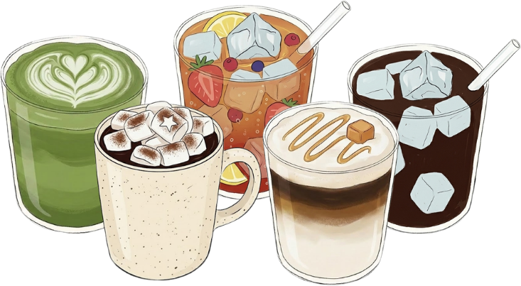

SOUL CAFE ✦ 靈魂特調
靈魂特調 Cafe
專屬你的屬靈充電指南

在忙碌與枯乾的日常裡，
你的靈魂正渴望哪一種養分？
回答 7 道心靈選擇題，
調配出屬於你與上帝的專屬特調。
你的靈魂正渴望哪一種養分？
回答 7 道心靈選擇題，
調配出屬於你與上帝的專屬特調。
01 / 07
題目載入中...
SOUL SPECIAL DRINK
特調名稱
【 屬靈類型 】
屬靈特質描述...
☕ 今日微屬靈操練 (3 mins)
微操練內容...